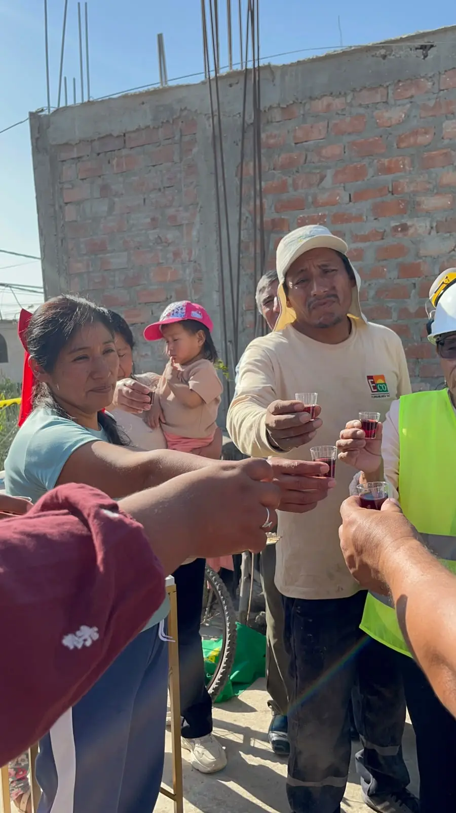

Nuestras Obras
Clasificación general de obras en cartera de VGI.
01
01.
Obras de edificaciones y afines

02
Obras viales, puertos y afines
02.

03
03.
Obras de saneamiento y afines

04
Obras electromecánicas, energéticas, telecom. y afines
04.
05
05.
Obras de represas, irrigaciones y afines